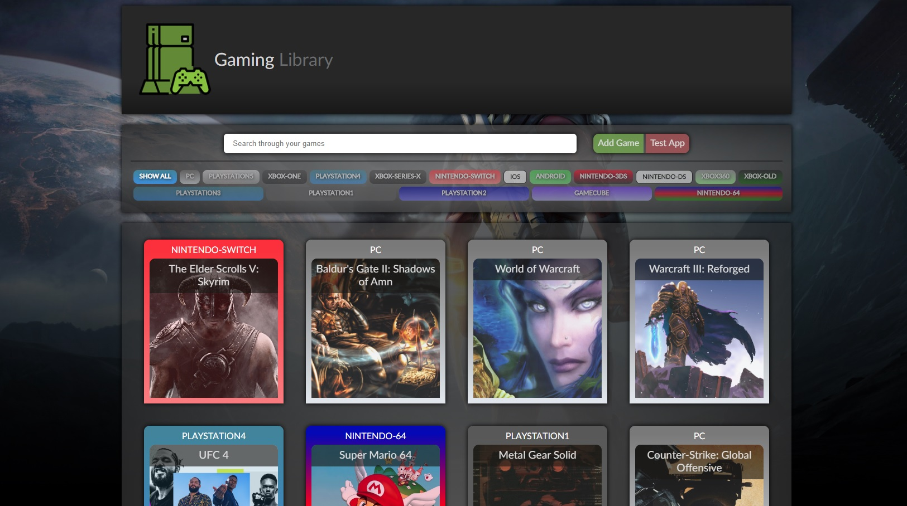
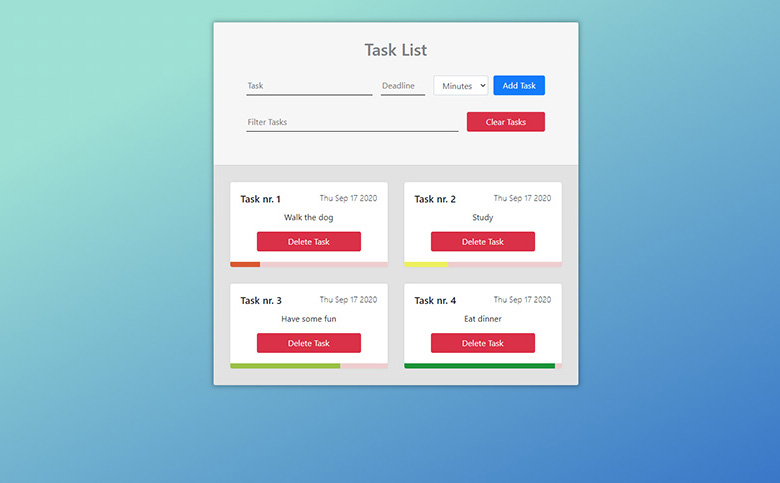

<div class="projects-container">
    <div href="#" class="project-grid">
        <section class="box">
            <div class="details">GamingLibrary /<span style="color:rgb(105, 105, 105);">/ 26.10.2020</span></div>
            <div class="description">Gaming Library app utilizing FETCH from RAWG.api - more in Github ReadMe file.</div>
            <a class="box-button-1" href="https://wonderful-nobel-e2bce1.netlify.app">Live</a>
            <a class="box-button-2" href="https://github.com/kohan14/GameLibrary">Code</a>
            
        </section>
        <section class="box">
            <div class="details">ToDoApp /<span style="color:rgb(105, 105, 105);">/ 18.09.2020</span></div>
            <div class="description">ToDoApp with progress bar feature for each task, to keep track of the ones that have to be done. Pure vanilla Js project to learn about LocalStorage. </div>
            <a class="box-button-1" href="https://gifted-hodgkin-e11af2.netlify.app">Live</a>
            <a class="box-button-2" href="https://github.com/kohan14/ToDoApp">Code</a>
            
        </section>
    </div>
</div>